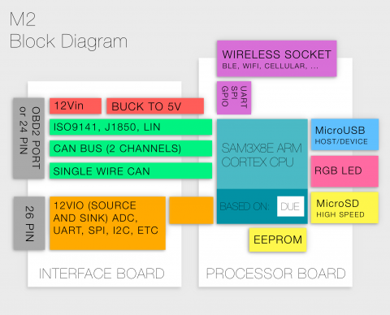
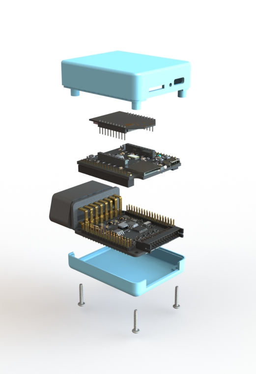
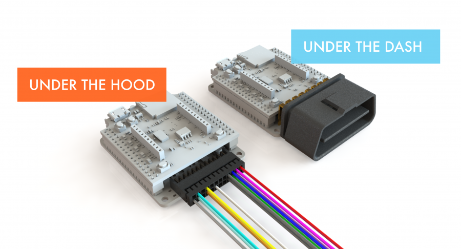

Overview
Block Diagram
M2 is an open source automotive interface that takes the form of a OBD2 "Under-the-Dash" dongle or hard-wired "Under-the-hood" device. M2 has all of the interface circuitry to connect to the 5+ standard OBD2 protocols and other interfaces (a second CAN bus, LIN bus, single wire CAN, etc). M2 has several options for connections to the outside world including: SD card, USB Device and Host, 20-pin (sort of standard) XBEE socket, and a general purpose connector.
The XBEE socket can accept several modules, including BTLE, WIFI, and CELLULAR and others.

Modular

We designed M2 to be modular.
Wireless Socket
M2 accommodates a wide variety of wireless options using the popular DIGI XBee form factor socket. Many inexpensive, plug-and-play boards already exist including BLE, WIFI, GSM, 3G, LTE, GPS and others. You can even reprogram M2 wirelessly.
Processor PCB
We chose the Arduino Due as the basis of M2's processor board. Shrinking the Due by well over 50% was no small task! We decided to make further improvements by using the High Speed SD card interface and writing the appropriate firmware libraries to allow for faster data logging. We also added several LED options and a couple switches for a more pleasant development experience. Lastly, we tacked on a EEPROM to store variables after power is cut to M2.
Interface PCB
The goal is for M2 to be able to interface and communicate with as many cars as possible. We crammed 2 channels of CAN, 2 channels of LIN/K-LINE, a J1850 VPW/PWM and even a single-wire CAN (GMLAN) interface onto the board. Automotive environments require M2 to be seriously strong, so we built in plenty of protection circuitry. Lastly, we have 6 general purpose driver circuits, which can source and sink up to 1 amp of current at 12 volts!
Enclosures
We have a few configurations of enclosures designed and ready for 3D printing. You can download the designs, tweak them as needed, print, share, lather, rinse, repeat.
Adaptable
